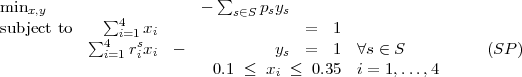
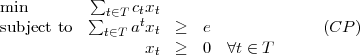
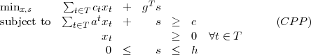

- It is desired to split some money between four different asset classes: domestic stocks, international
stocks, bonds, and money market funds. To create some diversification, at least 10% and no more
than 35% of the money is invested in each asset class. It is desired to maximize the expected value of
the portfolio after one year. Various scenarios S are possible over the year, with scenario s S
having probability ps. Let xi denote the proportion of assets invested in class i, i = 1,…,4.
Let ys denote the proportional increase in the value of the portfolio at the end of the
year under scenario s. Let ris equal the value of one dollar invested in asset class i at
the end of the year if scenario s is realized. The problem of maximizing the expected
wealth at the end of the year can be expressed as an equivalent minimization problem as
follows:

Assume we have the following equally-likely scenarios:
| s | r1s | r2s | r3s | r4s |
|
|
|
|
|
| 1 | 1.10 | 1.22 | 1.07 | 1.03 |
| 2 | 1.30 | 1.20 | 1.02 | 1.03 |
| 3 | 0.75 | 0.80 | 1.11 | 1.05 |
| 4 | 1.08 | 1.08 | 1.05 | 1.03 |
| 5 | 0.95 | 0.90 | 1.10 | 1.04 |
Use the L-shaped method to find the optimal solution to this problem.
- Use the network simplex algorithm to find the minimum cost flow for the problem with the following
linear programming representation:

Use the initial basic feasible solution with basic variables x12 = 1,x34 = 1,x41 = 1 and nonbasic
variables x13 = 0,x23 = 1,x24 = 0. You should need three iterations.
- In a vehicle routing problem, a set of cities {1,…,n} must be visited, starting from a base city 0.
More than one vehicle can be used, with each vehicle traversing a subtour that starts and ends at
the base but only visits a subset of the cities. There may be constraints on the allowed subtours; for
example, no tour can visit more than k cities, or no tour can take longer than U. This problem can
be formulated as an integer program with each variable corresponding to an allowable subtour. Let
T be the set of allowable subtours. Let ct be the cost of subtour t T. Let at {0,1}n be
the incidence vector of subtour t T, so ait = 1 if and only if tour t visits city i for
i {1,…,n}. The LP relaxation of the vehicle routing problem can then be expressed
as

where e denotes the vector of ones. Since the number of possible tours is very large, a column
generation approach is used.
Let n = 4. Assume the cost ct of a tour is given by the sum of the edge lengths in the tour, and the
edge lengths are as follows:
| city | 0 | 1 | 2 | 3 | 4 |
|
|
|
|
|
|
| 0 | – | 4 | 7 | 9 | 4 |
| 1 | 4 | – | 4 | 6 | 8 |
| 2 | 7 | 4 | – | 7 | 5 |
| 3 | 9 | 6 | 7 | – | 7 |
| 4 | 4 | 8 | 5 | 7 | – |
Let the current dual solution be y = (5,6,8,7)T . No tour is allowed to visit more than three cities
(plus the base city). Show that the current solution to (CP) is not optimal. How can the solution be
improved?
- Algorithmically, the problem (CP) in Question 3 is sometimes relaxed to

where g,h IRn are nonnegative vectors of parameters. How does this change the dual problem?
What benefit do you think this might have?